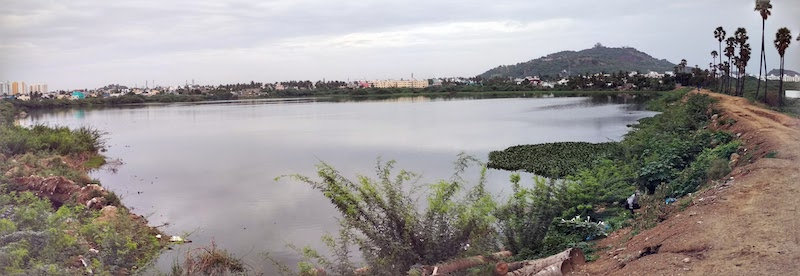
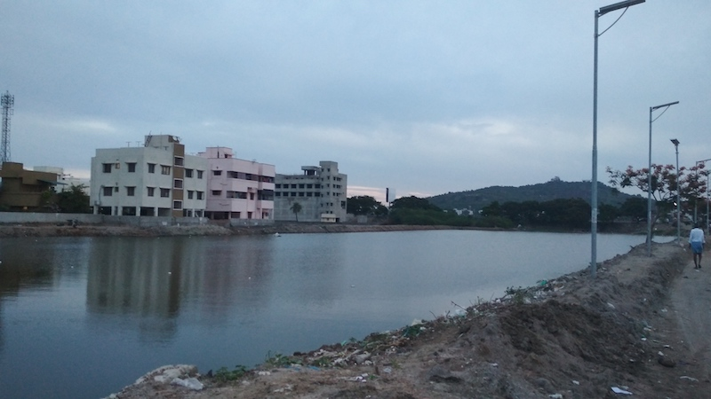
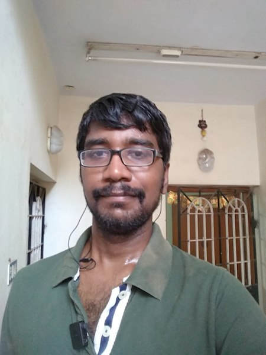

July 18, 2017. It all started today! Google Photos made a beautiful panaroma of Periyar Lake, Chrompet.
July 19, 2017. Started the run with great enthu. The lake was usless a month back. Now its charming. An ecosystem is evolving. The power of government.
July 20, 2017. Was very tired and it was late when I got up. Still I pushed myself to run. The feel was great and the sweat reminded me I'm human and kicking.
July 22, 2017. The sprain got healed. It was painful in during the noon yesterday. But anyway, wanted to give rest.
July 23, 2017. Rest continues.
Get in touch with me at vsr.saravanan@gmail.com